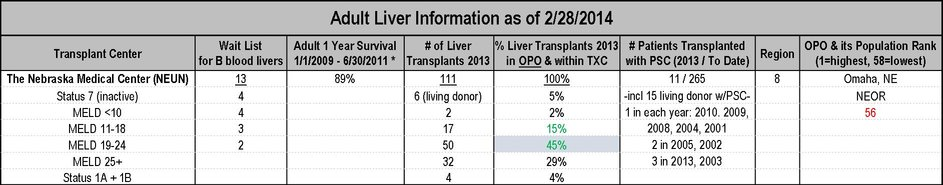

Services
After a free initial phone consultation, gathering facts and necessary details (blood type, liver disease, home zip code and other geographic areas of interest), Compare Transplant Centers will send you a completely tailored report, explaining:
- 1. Organ Allocation Policy
- 2. MELD
- 3. Blood Type
- 4. Regions
- 5. Transplant Center:OPO, the ideal ratio
- 6. Living Donor
- 7. Multi-listing
- 8. Multi-listing in other OPOs and Regions
- 9. Support for your Liver Disease
- 10. Resources
- 11. Helpful Hints
- 12. What to Ask When You Get “The Call”
- 13. What to Pack for a Transplant Surgery
- 14. Bibliography
Based on your situation, Compare Transplant Center will also tailor a comparative and detailed spreadsheet, especially for your situation, based on strategic transplant centers which are within driving distance. Or we can canvas any/all geographic areas in which you desire more detailed information on its centers.
Here’s a partial snippet of the comparative report:
We’ll finish with a comprehensive discussion together, highlighting each of the transplant centers with strategic advantages, including pairings with other excellent centers to double and triple your odds of getting a liver well ahead of time.